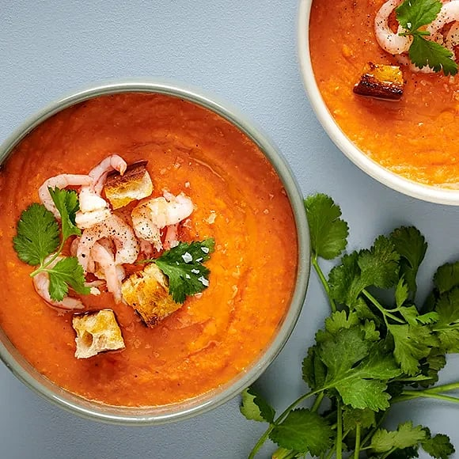

Red lentil soup with shrimp
Home

Red lentil soup with shrimp
Make a creamy and filling lentil soup with red lentils and coconut milk
for dinner! This dish is also great to take in your lunchbox the next day.
If you skip the shrimp, the soup is vegan!
Ingredients
- 1 can of coconut milk (400 ml each)
- 1 pack crushed tomatoes (390 g each)
- 6 dl of water
- 2 bouillon cubes
- 3 cups dried red lentils
- 1/2 tbsp freshly squeezed lime juice
-
1 tsp sambal oelek or chili flakes (1 tsp sambal equals 2 tsp chili
flakes)
- 1/2 tsp salt
- 2 tsp black pepper
- 2 dl frozen thawed peeled shrimp
- optional croutons and coriander (to top with)
Steps
-
Pour coconut milk, crushed tomatoes, water, stock cubes and lentils into
a saucepan. Bring to the boil and then simmer over low heat for about 10
minutes.
-
Add lime juice, sambal oelek or chili flakes and blend until smooth.
Season with salt and pepper.
- Top the soup with shrimp and, if desired, croutons and coriander.